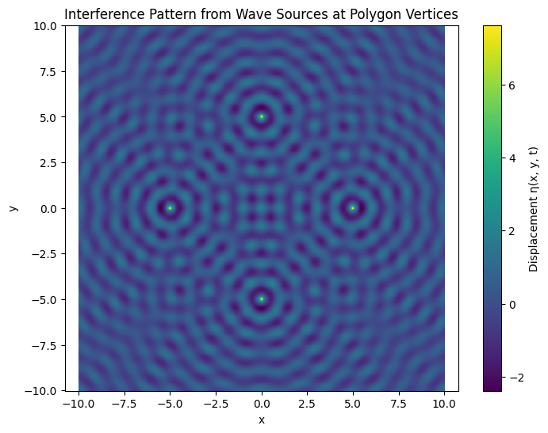

Certainly! Here's your content further refined and phrasalized for academic clarity and natural flow, while preserving the original mathematical and technical structure:
Problem 1: Interference of Circular Waves
1.1 Overview
This problem focuses on the investigation of interference patterns formed by circular water waves that originate from the vertices of a regular polygon—such as a triangle, square, or pentagon. As these wavefronts radiate outward from each vertex, they interact with one another, producing regions of constructive interference (where wave amplitudes reinforce each other) and destructive interference (where they cancel each other out). The symmetry of the geometric arrangement plays a key role in shaping the resulting wave patterns and highlights the fundamental principles of wave superposition.
1.2 Mathematical Model
Each source emits a radially symmetric (circular) wave, mathematically described by the following expression:
Where:
- \(r = \sqrt{(x - x_0)^2 + (y - y_0)^2}\) denotes the distance from the observation point \((x, y)\) to the source position \((x_0, y_0)\),
- \(k = \frac{2\pi}{\lambda}\) represents the wave number, with \(\lambda\) being the wavelength,
- \(\omega = 2\pi f\) is the angular frequency, where \(f\) is the wave frequency,
- \(A\) is the amplitude of the wave,
- \(\phi\) is the phase constant, representing the initial phase shift.
The factor \(1/\sqrt{r}\) reflects the attenuation of wave amplitude with distance, which is typical for wave propagation in a two-dimensional medium.
1.3 Superposition of Multiple Sources
When multiple such sources are present, the total wave pattern is governed by the principle of linear superposition. At any given point in the plane, the net displacement is obtained by summing the contributions from all \(N\) sources:
This approach enables the modeling and visualization of the complex interference patterns that emerge from multiple interacting wavefronts in two-dimensional space.

Let me know when you're ready to move on to the next section!